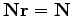

Next: Structural Analysis - new
Up: PySCeS: core analysis functions
Previous: Structural Analysis
Contents
- mod.nmatrix, N: displayed with mod.showN()
- mod.kmatrix, K: displayed with mod.showK()
- mod.lmatrix, L: displayed with mod.showL()
(an identity matrix means L does not exist i.e. no linear
dependence).
- If there are linear dependencies in the differential
equations then the reduced stoichiometric matrix of linearly
independent, differential equations Nr is available as mod.nrmatrix
and is displayed with mod.showNr(). If there is no dependence
.
- In the case where there is linear dependence the moiety conservation
sums can be displayed by using mod.showConserved(). The conservation totals are calculated
from the initial values of the variable species as defined in the model file.
- When the K and L matrices exist, their dependent
parts (K, L) are available as mod.kzeromatrix and
mod.lzeromatrix
- mod.showConserved() prints any moiety
conserved relationships (if present).
- mod.showFluxRelationships() shows the
relationships between dependent and independent fluxes at
steady state.
If the mod.showX() methods are used the various matrices'
row and column titles are displayed with the matrix. Additionally,
all of the mod.showX() methods accept an open file object as
an argument. If this file argument is present the method's results
are output to a file and not printed to the screen. Alternatively,
the order of each matrix dimension, relative to the stoichiometric
matrix, is available as either a row or column array (e.g.
mod.krow, mod.lrow, mod.kzerocol).
Next: Structural Analysis - new
Up: PySCeS: core analysis functions
Previous: Structural Analysis
Contents
Brett Olivier
2007-09-21